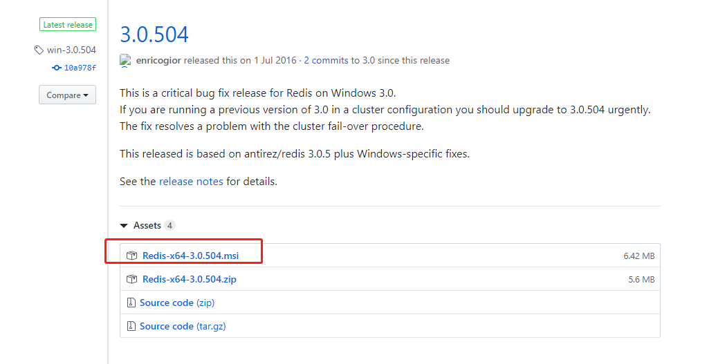
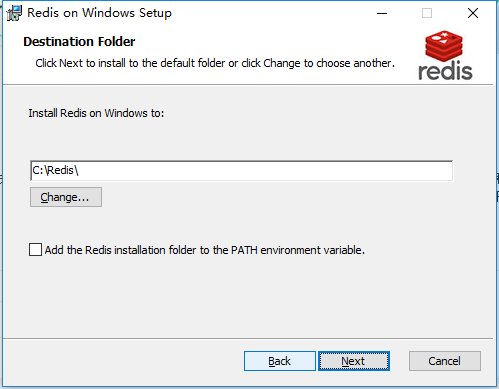
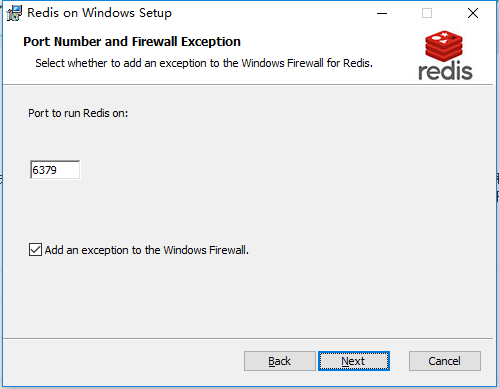
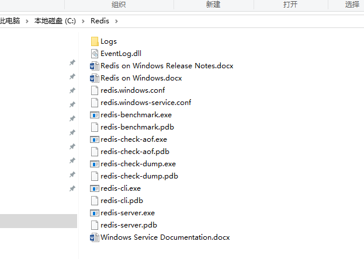
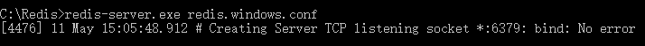
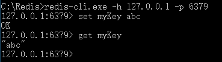
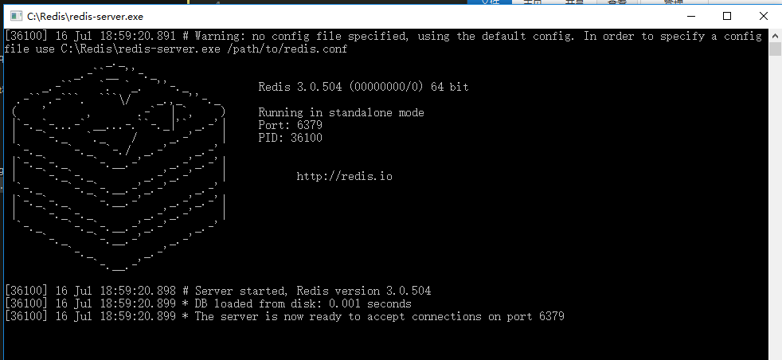
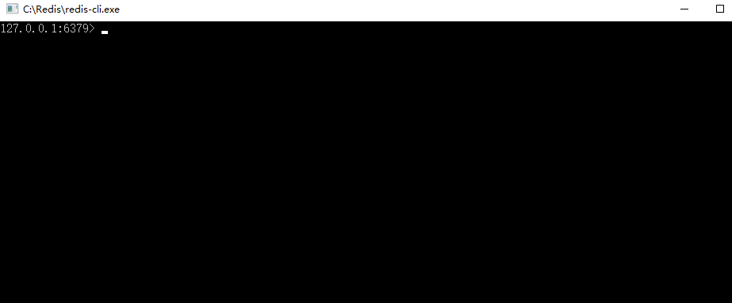
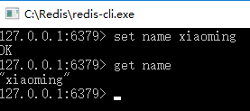

001-在window的安装
1、安装
这里介绍的是window上redis的安装
- 下载
从github下载对应的版本

- 运行msi
待下载后运行msi，中途会让我们设置安装路径、端口、最大容量等数据。



- 启动服务端
管理员运行cmd，进入安装好的路径里面C:\Redis。执行
redis-server.exe redis.windows.conf

- 验证
另起一个cmd，执行
redis-cli.exe -h 127.0.0.1 -p 6379# 设置 set myKey abc
读取
get myKey
```

2、redis的几个文件
主要的文件有下面3个:
redis.windows.conf: 客户端的配置redis.windows-service.conf: 服务端的配置redis-server.exe: 启动redis服务端redis-cli.exe: 启动redis客户端
双击redis-server.exe启动服务端后

可以再双击redis-cli.exe启动客户端，这样客户端就可以连接上服务端了

在客户端可以执行redis的命令
